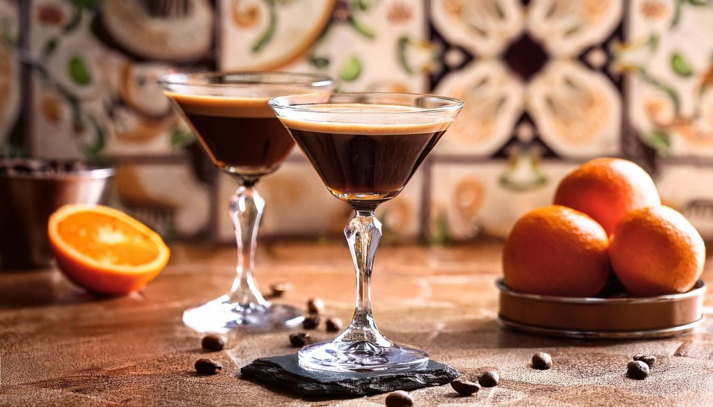

Grand Chocolate Coffee
Odin Recipes


Description
An elegant harmonizing of the flavors of coffee, citrus, and chocolate into a sumptuous flavor
experience for the palate.
Ingredients
- Two shots of freshly brewed espresso
- Grand Marnier
- Bourbon
- Chocolate sauce
- Ice cubes
- One orange twist
Steps
- Brew two shots of espresso (1.5 fl. oz. each) into a small pitcher
- Stir one teaspoon of chocolate sauce into the pitcher and stir until it melts
- Place 4-5 ice cubes in the glass
- Pour chocolate-espresso mix over the ice cubes. Stir until the espresso cools
- Add one tablespoon of Grand Marnier and 1.5 fl. oz. of Bourbon
- Garnish with one orange twist and serve